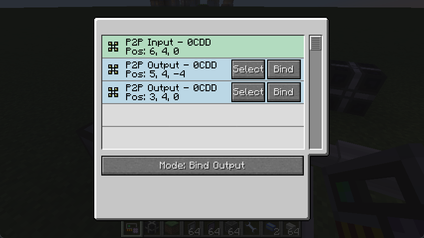
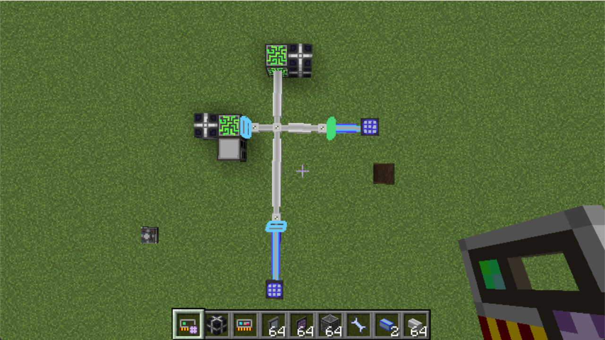
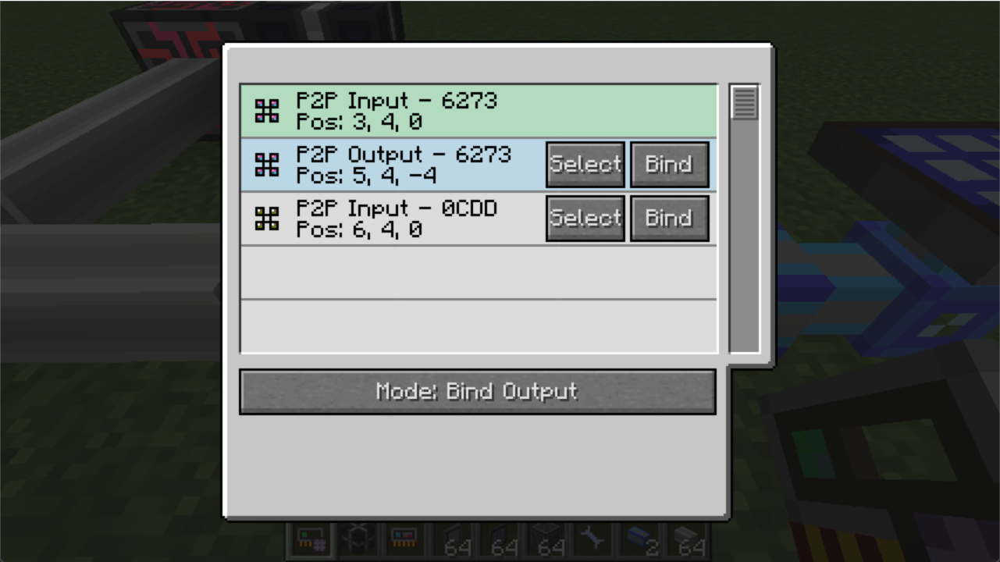

Better Memory Card

Are you getting exhausted managing your super large P2P network? This is the right tool for you.
Read its usage if you are new to this mod, or choose a chapter in the left to read.
Download
Requires Forgelin.
https://www.curseforge.com/minecraft/mc-mods/betterp2p
基本使用
本章将手把手教您使用这个强大的工具。
合成
使用应用能源2的内存卡和网络工具进行无序合成，你就可以得到一个强化内存卡。整合包中的合成可能会被魔改。
查看一个网络
使用强化内存卡右键一个 ME 网络设备或者 ME 线缆，便可以查看该网络中的 P2P 设备。
工具的主界面展示了该 ME 网络中的所有 P2P 设备，你可以在这个界面对这些 P2P 设备进行编辑。

示例：建立 P2P 通道
我们来展示一个例子。我们想将两个蓝色线缆的 ME 网络通过 P2P 连接起来。

显然我们想将这两个 P2P 一个设为输入一个设为输出，这样就可以建立一个 P2P 网络。只需要右键一个 P2P 设备，界面中就会自动选择这个设备，你也可以通过点击“选择”按钮来手动选择它。
界面中已选择的设备被涂为绿色。我们将模式改为“绑定输出”，点击要作为输出的 P2P 设备上的“绑定”按钮（你可以绑定多个输出设备）。

工具自动生成了一个 P2P 频率并且把当前选择的设备设为输入模式，另外两个设备设为输出模式，并且我们的网络也像预期一样工作了。
预览功能

在你选择了一个已配置频率的 P2P 设备并退出界面后，它将会在世界中拥有一个绿色边框，同时同频率的 P2P 设备会拥有一个蓝色边框。这将帮助你寻找你的 P2P 设备。你可以拿着强化内存卡 Shift+右键空气 来清除这些边框。
如果你在强化内存卡的界面以外的地方修改了 ME 网络（比如打掉一些线缆），你可能需要重新使用强化内存卡选择 P2P 设备来保证边框渲染正确。
其他模式怎么用？
我们会在下面的章节中分别介绍强化内存卡的三种模式。
模式：绑定输出
在第一个章节中，我们建立了第一个 P2P 通道。然而在多数情况下我们需要对已有的 P2P 通道网络进行修改。强化内存卡提供了三种模式来应对这些情况。
首先，我们需要了解强化内存卡中“绑定”的工作原理。
何为绑定？
简单的来说，当你点击“绑定”按钮的时候，会分配一个 P2P 设备作为“输入”，另一个 P2P 设备作为“输出”。
若作为“输入”的 P2P 设备没有频率或者它本身为输出模式，它将会变为输入模式，并且会被分配一个新的频率。（类似于内存卡的Shift+右键）
之后作为“输出”的 P2P 设备将会被设为输出模式，并且设为同频率。我们就建立起了一个“输入”到“输出”的 P2P 通道。
如果想了解它背后的原理，你可以查看 代码.
使用情景
我们想修改一下上一章中设立的简单网络，把右边的 P2P 设备设为输入，把下面的 P2P 设备作为输出。

我们只需要选择在右边的 P2P 设备，使用“绑定输出”模式找到并绑定在下面的 P2P 设备。

现在右边的 P2P 设备被分配了一个新频率并且被设为了输入模式。我们建立了一个仅限于蓝色线缆的独立 P2P 通道。
模式：绑定输入
将被绑定的 P2P 设备作为输入，已选择的 P2P 设备作为输出进行绑定。
使用情景
我们在 ME 控制器上贴了一堆 P2P 设备，我们现在想要在外面连接到这些设备。

你可能想要使用“绑定输出”模式，但是网络太复杂了，你找不到你要设置的输出 P2P 在哪里。这个时候我们可以选择对准蓝色线缆的一个 P2P 用“绑定输入”模式，绑定贴在 ME 控制器上的 P2P。在另一个 P2P 设备上也进行同样的操作。

现在我们设立了拥有一个输入，两个输出的 P2P 通道。
模式：复制输出
寻找已选择的 P2P 通道中的输入 P2P 设备作为输入，将被绑定的 P2P 设备作为输出进行绑定。
使用情景
我们想要将 ME 控制器的一个面切分成四个线缆输出。现在已经有了一个控制器到橙色线缆的 P2P 通道，我们想复制到其他的三条线缆。

我们只需要选择面向橙色线缆的 P2P 设置，使用“复制输出”模式，绑定到另外三个 P2P 设备。现在四条线缆都分享了 ME 控制器的一个面。